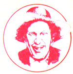

"You can learn many things from children. How much patience you have, for instance. "
Franklin P. Jones
Well sir, in these parts there's a certain tale what's told most ev'ry year, 'round yuletide. Some folks say it's a true story, an' thet-though the names has changed over the years-it actually concerns Ott Bartlett when he was a young scamp. (An' those who know old Mister Bartlett's downright ornery nature don't see any reason to doubt that supposition.) But wherev'r the story comes from, it's pretty much a Plumtree Crossin' tradition thet one night before Santa Claus comes down the chimney, the members of each family will gather together, an' someone present will retell the local legend . . . the story of "The Boy Who Trapped Christmas".
It seems thet once there was a seven-year-old named Otis Bunkum who was the exasperatin'est, troublemakin'est, dang nigh untrainablest young feller what ever lived. This little stinker thought not a whit of dunkin' an onion in the butter churn . . . pullin' the wings off a butterfly . . . or bitin' his sister harder'n Satan's bulldog. (Why, he was so nasty-natured he even scowled in his sleep!)
Now Otis's big sister Mary Ellen, on the other hand, was jist the opposite of her spitfire brother. She was a kind, demure, 17-year-old girl. An' seein' as how she was right attractive, to boot, local boys was inclined toward her the way moths take to light. But her parents-who was busy enough with their son-jist didn't have any leftover patience to spend on a bunch of hillbilly Lotharios, so they forbade her to have any gentlemen callers.
Still, one particular lad-a lank-legged, good-natured feller named Jeremy Reed-was so smitten with Mary Ellen thet he'd go to jist about any length to catch a glimpse of her. Furthermore, his ardor was inflamed by the fact thet ev'ry once in a while Mary Ellen seemed to send a shy smile or a sparklin' glance his way. But he never could git a chance to find out if she really did take a shine to him . . . because of little Otis the Awful.
If, fer instance, young Mister Reed passed Mary Ellen a note in church, Otis would intercept it an' send one back thet was chockfull of pungent horseradish, causin' the whole congregation to turn an' look at the lad as soon as he opened it. Or if Jeremy waited near the pigpen so's he could spot Mary Ellen when she fed the sow, Otis'd sneak up in the barn rafters first an' drop the slop down on the luckless suitor. An' once-when Jeremy won the biddin' for Mary Ellen's food basket at the box social-Otis actually picked the earnest lad's pockets jist afore he went up to pay . . . an' right there in public the poor feller found he weren't able to afford the pleasure of his desired's cookin' an' company after all! It was plumb discouragin' fer Jeremy . . . because he knew a girl of Miss Bunkum's fine qualities couldn't be left hangin' on the vine ferev'r.
O'course, Otis's nastiness were spent on a lot of other folks, too . . . an' his family was plenty perturbed. They'd tried lecturin' at the little demon . . . sendin' him to bed supperless . . . barehandin' his bottom to a beet-bright red . . . an' even takin' a belt to the boy out behind the woodshed. But the more they punished the rascal, the meaner he got. Finally, when Christmas time rolled around, Otis's folks told him right out thet if he didn't straighten up-but soon!-of Saint Nicholas'd bring him nothin' but coal dust an' ashes in his stockin'. But the little hellion weren't even improved by thet threat. He jist started schemin' ways to play a trick on Father Christmas hisself! (Like I told you, thet boy was bad!)
Meanwhile, Jeremy Reed was makin' his own plans fer Christmas Eve. After cobblin' together all his year's savin's, you see, he'd bought a small gold heart fer Mary Ellen. But he wanted to give it to her when little Otis weren't around (jist in case Mary Ellen might choose to demonstrate her gratitude). An' it occurred to the wistful swain thet iffen there were one night of the entire year when the little varmint's parents ought to be able to git him to bed an' outa the way, it'd have to be Christmas Eve.
Naturally, young Mister Reed knew he still couldn't jist knock on the house door to git his beloved's attention. But suppose (jist sup pose) he climbed up on the roof, waited until the object of his pursuit walked past the hearth, an' then softly called down the chimney to her? Even if little Otis did hear any noise on the roof, he'd think Santa Claus was comin' an' figger he'd better skedaddle back to sleep before he scared Saint Nick away!
So on the night of December 24, young Jeremy nestled the gold heart in the bib pocket of his overalls, snuck over to the Bunkums' cabin, threw a rope around the main chimney, an' hauled hisself onto the roof. Once there, he tiptoed up to the chimney an' leaned over the edge. He'd jist stuck his head in about half a smidgen when-SNAG!-a noose yanked him headfirst into thet smoke hole . . . stickin' him in all the way down to his hips.
"Gotcha!" Otis chortled from the fireplace below, delighted thet his chimney snare had caught Father Christmas.
Jeremy tried to squirm free, but his arms was pressed tight to his sides. "I'm stuck!" he cried . . . his voice bouncin' all muffled-like down the flue.
"O'course yer stuck, Santa," Otis gloated. "I stucked you!"
"Look, little boy," Jeremy called down (figurin' he might be jist a wee bit better off iffen thet little polecat believed he was talkin' to Saint Nicholas), "you gotta let me go so I can deliver my presents!"
"Nothin' doin', Gran'pa!"
"But ev'ry single boy an' girl will hate you ferev'r!"
"So what? I hate them worse'n spoiled snake spit already."
"But Otis, this is yer chance to do a kind deed . . . jist once, child!"
"Aw, go chew pokeberries!"
Well, Jeremy squirmed an' squirmed in the chimney, but he couldn't git loose. Instead, all thet shakin' did was wiggle the gold heart he'd bought plumb out of his bib pocket. The ornament fell down, plopped onto Otis's palm, an' bounced into the ashes.
"Hey!" Otis yipped. He bent down an' picked the little charm out of the fireplace. He rubbed it between his fingers an' on his sleeve, an' stared awhile at the gleamin' object . . . then-somehow-thet small gold gift from Father Christmas began to touch a spot what pleadin' an' punishment hadn't been able to reach. The more Otis rubbed an' turned the little heart in his hand, the more misty-eyed he got, until-suddenly he said, "OK, I'll let you go."
Otis untied the base end of the snare from the fireplace damper. "Now, git out of here, Chubby," he cried, wipin' his eyes with the back of one sooty hand, "quick!"
Jeremy tried to move, but noose or no, he were still wedged tight. "I cain't," he called. "I cain't git out!" He were gittin' desperate, too . . . if Mary Ellen's parents caught him there, they'd never let him see her again. "Help me, Otis, please," he begged.
An' then Otis did a remarkable thing. He scratched his way up inside the dark, sooty chimney-cryin' all the while-until he bumped into Santa. There he wedged his own body against the stone walls an' pushed . . . shovin' an' gruntin', an' gruntin' an' shovin', jist as hard as ev'r he could, until-pop!-Saint Nick was forced out the top of the chimney.
"Now, go away!" Otis sobbed. "Git outa here!"
"I will, I will!" Jeremy said. "An' thank you, Otis, thank you."
The boy scurried back down an' had jist plopped into the ashes, his whole body black with soot . . . when Mary Ellen came in.
"What in thunderation happened here?" she asked.
"I jist helped Santa git hisself outa the chimney," Otis said, grinnin' through his tears. "He gave me this little heart."
Mary Ellen's eyes opened wide when she saw the charm (after all, it were a most unlikely gift for a seven-year-old boy). She ran to the front door and peered out jist in time to see a familiar lank-legged form retreating rapidly into the woods. Then she clasped her hands silently . . . an' smiled.
Now it's said thet young Otis Bunkum never became what you'd call an angel, but from thet day forth he did begin to show a few drops of the milk of human kindness. It's also said thet Mary Ellen snuck Jeremy Reed aside the next time she saw him an' gave him a big "yet wonderful!" kiss right on the lips. It's even said thet Mister and Missus Bunkum heard all about what happened an' started lettin' one of Mary Ellen's suitors in the front door when he came a-callin'. But mostly it's said-by ev'ry Plumtree Crossin' family what tells the story of the boy who trapped Santa Claus-thet this tale jist goes to show . . . the best way to git kindness is to give kindness, no matter what kind of a fix you git yerself in.
God bless all of you, an' Merry Christmas!
"There are only two lasting bequests we can hope to give our children. One of these is roots; the other, wings. "
- Hodding Carter
|
 |
|
|